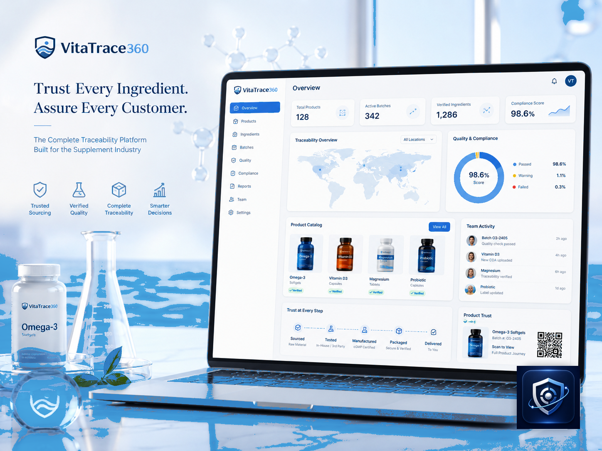

Produktzentrale
Verwaltung von Produkten, Inhaltsstoffen, Anwendung, Warnhinweisen, Bildern, Dokumenten und Freigabestatus.
VitaTrace360 bündelt Produkte, freigegebene Materialien, Außendienstteams, Apotheken, Fachkreise, QR-Seiten und Reports in einem eleganten, skalierbaren und compliance-orientierten System.
Entwickelt für Supplement-Marken, Wellness-Unternehmen, Distributoren und Vertriebsteams, die klarer, vorsichtiger und messbarer kommunizieren wollen.

In vielen Unternehmen liegen Produktblätter, Broschüren, Präsentationen und Marketingbotschaften in E-Mails, WhatsApp, Ordnern und unkontrollierten PDFs. VitaTrace360 macht daraus einen konsistenten digitalen Workflow.
Vom Produktkatalog bis zu Reports, Besuchen, freigegebenen Materialien und QR-Seiten organisiert die Plattform die gesamte Kommunikationskette.
Verwaltung von Produkten, Inhaltsstoffen, Anwendung, Warnhinweisen, Bildern, Dokumenten und Freigabestatus.
Digitale Bibliothek für Broschüren, Präsentationen, Produktblätter, Videos, Studien und freigegebene Materialien.
Tool für Außendienst: Besuche, Follow-ups, Notizen, präsentierte Produkte, Karten und Reports.
Bereich für Apotheken: Kurzblätter, Training, FAQ, Feedback und Materialanfragen.
Der folgende Code ist echt und öffnet die Live-Website von VitaTrace360. In der Plattform kann dieselbe Logik Produkt-, Rückverfolgbarkeits- und Transparenzseiten für Marken erzeugen.
VitaTrace360 ist keine Diagnoseplattform und empfiehlt keine Behandlungen. Es ist eine B2B-Plattform für Organisation, Schulung, Rückverfolgbarkeit, Materialkontrolle und professionelle Kommunikation.
VitaTrace360 kann als flexible digitale Schicht über bestehenden Abläufen eingesetzt werden: CRM, ERP, Dokumente, Reporting, QR-Seiten und kommerzielle Prozesse.
Wir können eine Demo mit simulierten Produkten, Materialien, QR-Seiten, Besuchen und Reports konfigurieren, angepasst an ein reales Supplement-Unternehmen.
Kontakt aufnehmen